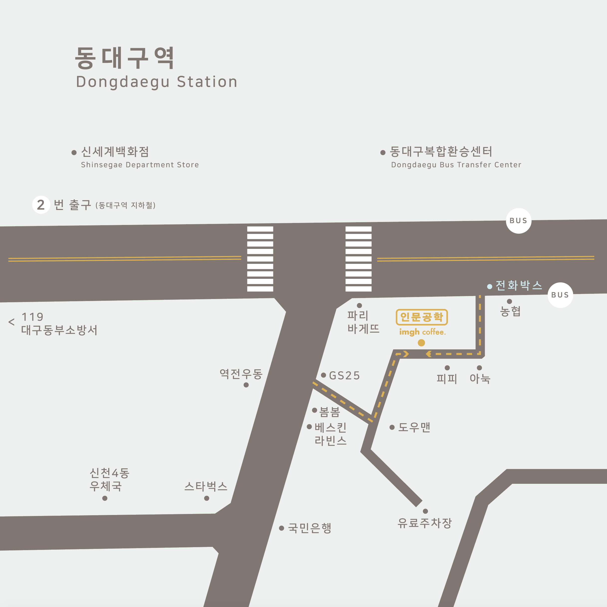

recipe
coffee
아메리카노
I : 얼음 6개 + 물 5oz + 샷
H: 뜨거운물 7oz + 샷
카페라떼
I : 얼음 6개 + 우유 5oz + 샷
H: 샷 + 스팀우유 6oz (60도)
아인슈패너
I : 얼음 6개 + 물 2oz + 샷 + 크림 + 로즈마리 데코
H: 뜨거운물 7oz + 샷 + 크림 + 로즈마리 데코
콜드브루 *only ice
I : 얼음 4~5개 + 물 4oz + 원액 70g
플랫화이트 *only ice
I : 우유 4oz + 샷 + 얼음 2~3개(집게 사용)
noncoffee
밀크슈패너
I : 얼음 4개 + 우유 4oz + 크림 + 시리얼 데코
H: 스팀우유 7oz (65도) + 크림 + 시리얼 데코
크림 말차라떼
I : 말차액 30g + 우유 4oz + 크림 + 말차가루(반만 뿌리기)
H: 말차액 30g+ 스팀우유 7oz (65도) +크림 + 말차가루(흩뿌리기)
크림초콜릿라떼
I : 초코액 40g + 우유 4oz + 크림 + 초코가루(반만 뿌리기)
H: 초코액 40g+ 스팀우유 7oz (65도) +크림 + 초코가루(흩뿌리기)
사과쥬스
I : 사과청 한스푼(25~30g) + 사과쥬스 6oz + 섞어주기 +빨대 + 얼음
유자레모네이드
I : 유자청 두스푼(40~45g) + 레모네이드 3oz + 섞어주기 + 탄산수 3oz + 탄산 덜빠지게 살살 + 빨대 + 얼음 + 건레몬 데코
꿀 유자차
H: 꿀 10g + 유자청 두스푼 (40~45g) + 뜨거운물 8oz + 섞어주기 + 건레몬 데코
이외의 차 *뜨거운 물 리필 가능
I : 티백에 뜨거운 물 살짝 적셔주기 + 뜨거운 물 조금 + 우려낸 후 얼음과 찬물 + 건레몬 데코
H: 티백에 뜨거운 물 살짝 적셔주기 + 뜨거운 물 붓기 + 건레몬 데코
운영 매뉴얼
오픈 전
식재료
비 식재료